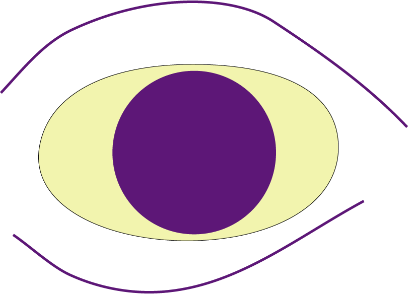

For this assignment, I created a vector illustration of an expressive eye using two shapes and two complementary colors. I chose purple and yellow to create strong contrast and make the iris stand out. The wide eyelid shape and the position of the pupil help communicate a surprised emotion. By simplifying the eye into basic geometric shapes, the design focuses on expression rather than realism.
To create the illustration, I imported a reference image into Adobe Illustrator and lowered its opacity so I could draw over it. I used ellipse shapes for the eye and iris and used curved paths to create the eyelid lines. I organized the artwork using layers and adjusted stroke weights to make the lines more expressive. Using vector shapes allowed me to scale the artwork easily while keeping the illustration clean and simple.